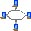

MidiShare Internet Drivers
english
version
Les drivers MidiShare Internet ouvrent le
monde de la communication temps réel sur Internet aux applications
clientes de MidiShare.
Ces drivers sont fournis sous la forme de 2 librairies partagées
distinctes:
- msLANDriver.dylib : fournit un système de communication temps
réel avec une faible latence sur un réseau local.
Le driver inclus un système automatique de reconnaissance
des machines distantes.
- msWANDriver.dylib : fournit la communication temps réel sur
Internet. La connection à une machine distante est controlée
par l'utilisateur via un fichier d'initialisation.
Les 2 drivers ont les caractéristiques
communes suivantes :
- les machines distantes apparaissent comme
des slots MidiShare. Pour configurer les connections avec ces
slots, utilisez l'application 'msDrivers'.
- comme les machines distantes sont identifiées
de manière unique par leur adresse IP, celle-ci est utilisée
pour sauver et restaurer automatiquement l'état des connexions
de ces machines. Selon le mode de fonctionnement du driver, ces
connexions représentent des connexions inter-applications
ou des connexions de port.
- le comportement des drivers est controlé
par des fichiers .ini (msLANDriver.ini et msWANDriver.ini). Ces fichiers sont lus
dans le dossier $HOME/MidiShare de l'utilisateur.
En l'absence de fichier .ini, des valeurs par défaut sont
utilisées pour les paramètres (voir les pages correspondant
à chaque driver).
Le driver Internet de MidiShare est à
la base du projet Radio
Hard Disk qui consiste notamment en une diffusion permanente
de musique en temps réel sur Internet.
Les drivers Internet font partie du projet
MidiShare.
Ils ont été développés par le laboratoire
de recherche en informatique musicale de Grame, en collaboration avec la société
Mil-Productions.